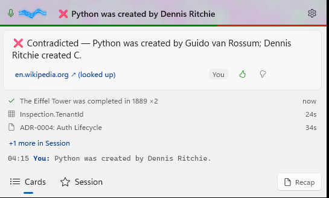
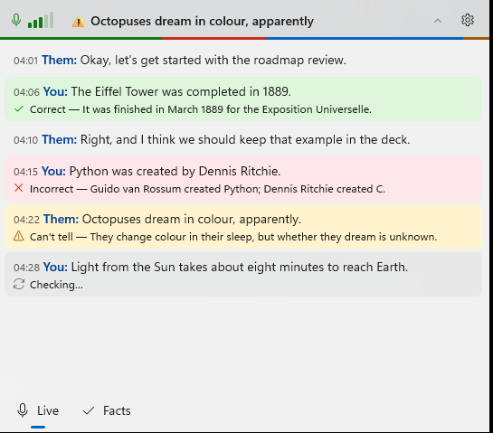
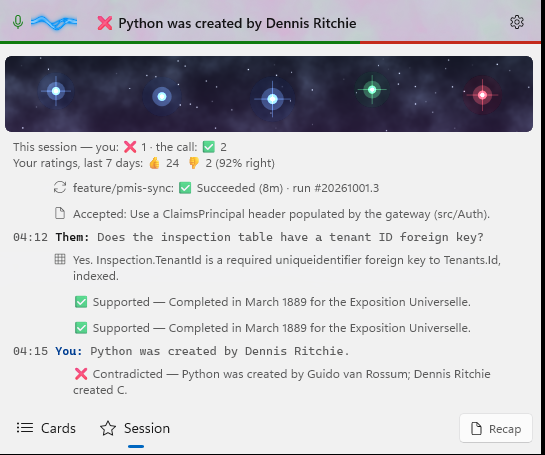
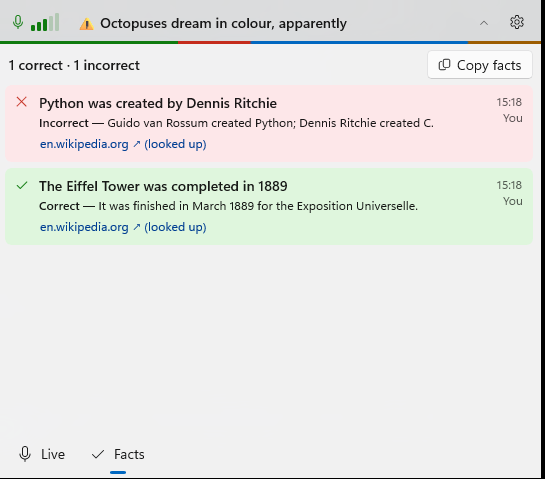
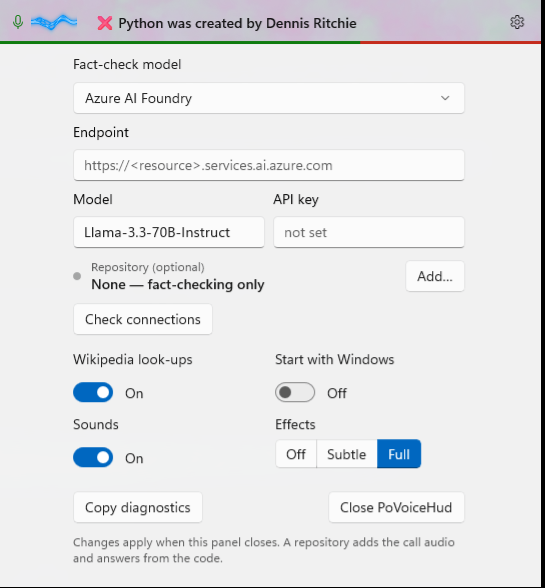
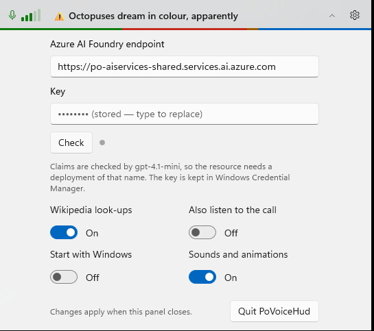

A real-time fact checker: Live and Facts
Debug build with --demo (a sample conversation, no audio), captured with PrintWindow at 150 %. "Before" is this morning's build (Cards, Session, Recap). "After" is the working tree on 2026-10-20 with all ten simplifications.
Cards → Live
Before: Cards

After: Live

1 2 3 4 5 6- Every line, as it is heard, with the time and who spoke (You and Them only when the call is heard too). Questions and chit-chat stay plain.
- Correct: the sentence turns green and the reason sits under it. The highlight fades in when Sounds and animations is on.
- Incorrect: red, with the correction.
- Can't tell: amber. It shows here only, not on Facts.
- Checking… shows on the sentence itself while the model works, from the moment the line is queued.
- The panel stays open. The headline, with its chevron, is the only thing that closes it. There's no auto-open, auto-close or pinning.
Session → Facts
Before: Session

After: Facts

1 2 3 4- The count of correct and incorrect claims this session. The headline's tooltip shows it too.
- Copy facts replaces Recap: one
✅ Correct: claim — reason (link)line per fact, ready to paste. - Only verified claims, newest first. A claim said again is one row marked ×2.
- The source: (looked up) when it is a Wikipedia article the app fetched itself, (cited by the model) otherwise.
Settings
Before

After

1 2 3 4- Endpoint and key only. There's no provider choice and no model box:
gpt-4.1-miniis built in. Check says what's wrong in plain words (key refused, no such deployment, unreachable). - A line saying which model is used and where the key is kept.
- Four switches. Also listen to the call replaces Repo mode's call audio. Sounds and animations replaces Sounds plus the Full / Subtle / Off effects levels.
- Quit stays here. Copy diagnostics moved to the tray menu.
All ten
| # | Change |
|---|---|
| 1 | Live and Facts pages replace the focus card, shelf, Session tab and constellation |
| 2 | The panel stays open; the 20-second auto-close, hover-to-keep-open and pinning are gone |
| 3 | Correct / Incorrect / Can't tell; "Checking…" on the sentence; nothing at all for non-claims |
| 4 | Repo mode is gone: git, schema, docs, Azure DevOps and code answers, the repository settings and the token. "Also listen to the call" stays. |
| 5 | Ratings are gone: 👍/👎, the weekly score and milestones |
| 6 | Recap is gone (the writer, its hotkey, the tray item and the mute prompt); Copy facts replaces it |
| 7 | gpt-4.1-mini on Foundry is fixed; the Ollama option, the model box and the local chatter filter are gone |
| 8 | Settings: endpoint, key, Check, and four switches |
| 9 | One mute hotkey; the re-check and recap hotkeys, Ctrl+E/Esc, the pill's right-click menu and the tray's mute and Start-with-Windows items are gone |
| 10 | The GPU effects are gone (aurora, ribbon, shockwaves, frost, sparks, comets, constellation, springs), leaving the verdict colours and a fade. README is now the only design doc. |